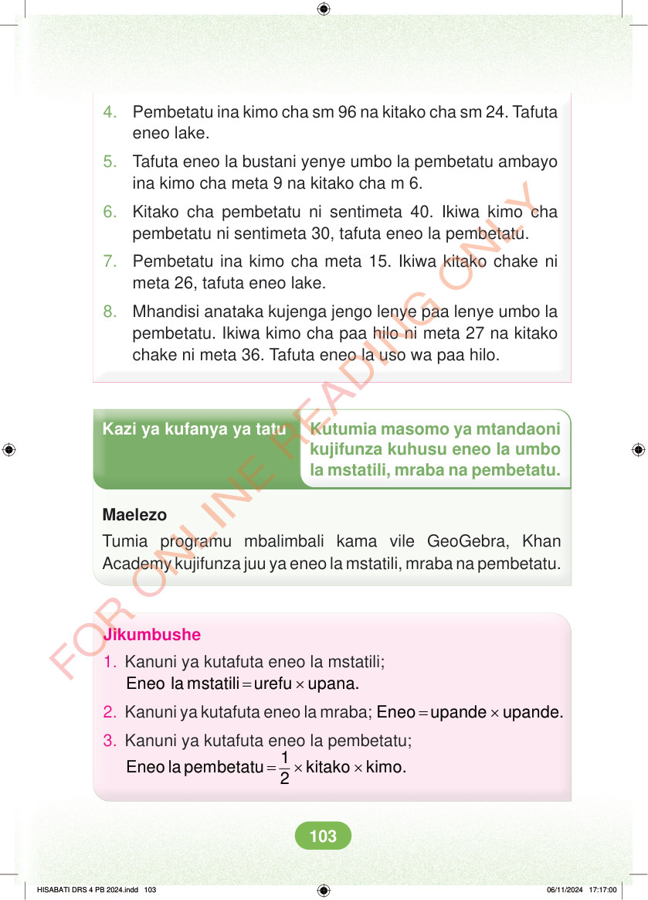

<!DOCTYPE html>
<html lang="sw-TZ"><head><meta charset="utf-8"><meta name="viewport" content="width=device-width,initial-scale=1">
<title>Hisabati: Kitabu cha Mwanafunzi Darasa la Nne</title>
<meta name="title-id" content="pg109_sec001"><meta name="page-section-id" content="114">
<link href="./content/tailwind_output.css" rel="stylesheet"><link href="./assets/libs/fontawesome/css/all.min.css" rel="stylesheet"><link href="./assets/fonts.css" rel="stylesheet">
<style>body{margin:0;background:#eef1ed}main{width:100%;display:flex;justify-content:center;padding:1rem 1rem 5rem;box-sizing:border-box}#content{width:100%;display:flex;justify-content:center}.pdf-page{position:relative;width:min(calc(100vw - 2rem),56rem);aspect-ratio:540.8980102539062/750.6610107421875;background:white;box-shadow:0 4px 24px #0002;overflow:hidden}.pdf-page img{position:absolute;inset:0;width:100%;height:100%;object-fit:fill}</style>
</head><body><main><h1 class="sr-only" id="page-heading">Ukurasa wa 109</h1><div id="content" class="opacity-0"><section role="article" data-section-type="pdf_accessible_page" data-section-id="pg109_sec001" aria-labelledby="page-heading" class="pdf-page"><p class="sr-only" data-id="pg109_gp001_tx001">4. Pembetatu ina kimo cha sm 96 na kitako cha sm 24. Tafuta eneo lake. 5. Tafuta eneo la bustani yenye umbo la pembetatu ambayo ina kimo cha meta 9 na kitako cha m 6. 6. Kitako cha pembetatu ni sentimeta 40. Ikiwa kimo cha pembetatu ni sentimeta 30, tafuta eneo la pembetatu. 7. Pembetatu ina kimo cha meta 15. Ikiwa kitako chake ni meta 26, tafuta eneo lake. 8. Mhandisi anataka kujenga jengo lenye paa lenye umbo la pembetatu. Ikiwa kimo cha paa hilo ni meta 27 na kitako chake ni meta 36. Tafuta eneo la uso wa paa hilo. Kazi ya kufanya ya tatu Kutumia masomo ya mtandaoni kujifunza kuhusu eneo la umbo la mstatili, mraba na pembetatu. Maelezo Tumia programu mbalimbali kama vile GeoGebra, Khan Academy kujifunza juu ya eneo la mstatili, mraba na pembetatu. Jikumbushe 1. Kanuni ya kutafuta eneo la mstatili; = × Eneo la mstatili urefu upana. 2. Kanuni ya kutafuta eneo la mraba; = × Eneo upande upande. 3. Kanuni ya kutafuta eneo la pembetatu; = × × 1 Eneo la pembetatu kitako kimo. 2 HISABATI DRS 4 PB 2024.indd 103 HISABATI DRS 4 PB 2024.indd 103 06/11/2024 17:17:00 06/11/2024 17:17:00</p></section></div></main><div class="relative z-50" id="interface-container"></div><div class="relative z-50" id="nav-container"></div><script src="./assets/offline-preloader.js"></script><script src="./assets/scorm.js"></script><script src="./assets/base.bundle.local.js"></script></body></html>